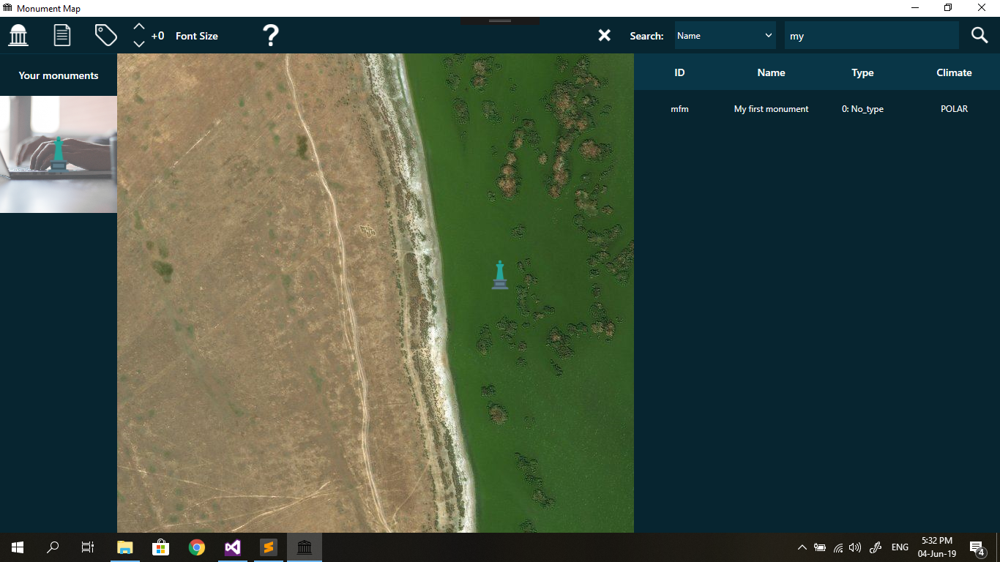

If you are having a hard time to find a monument, search tool is an awesome thing for you.
Simply start typing in search textbox and results will start poping up. You can additionally set the search criteria clicking combobox next to the search textbox. After the item that your heart desired appeared in results, simply click on it and application will redirect you to the monument on map and highlight it in the left where your monuments are stored. Also, it will display it's data on the right if you click on it.
